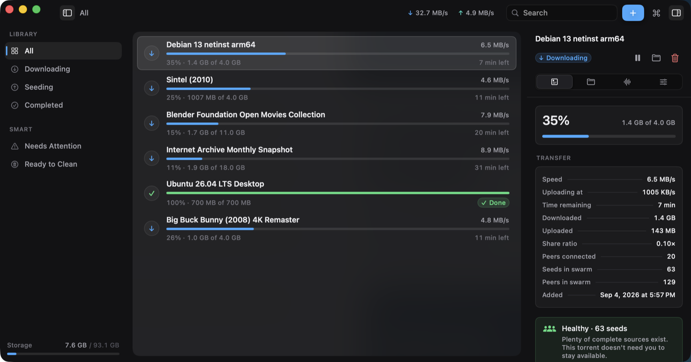
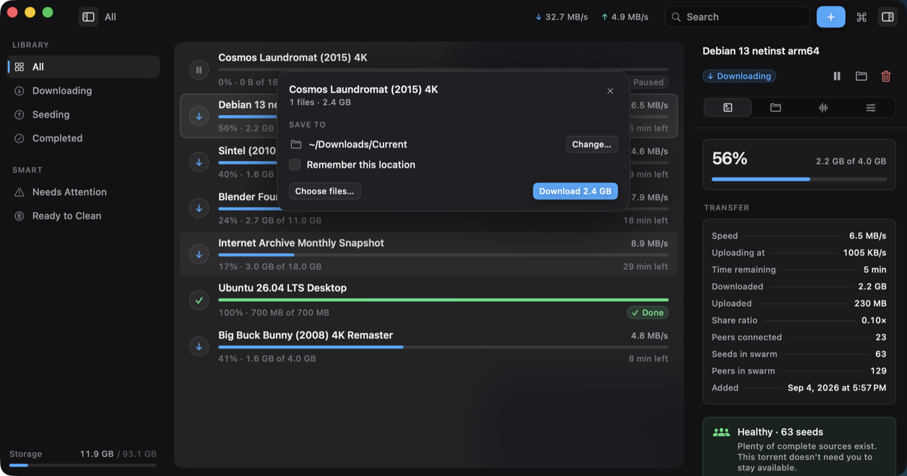
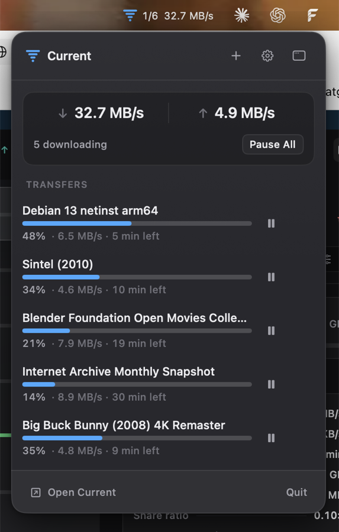

Torrenting is a background activity.
So Current is quiet when nothing is happening, informative when something is, and reversible when it acts on its own. A native Mac client for people who would rather not sit and watch a progress bar.

Six transfers, one of them finished. Nothing in that window comes from the system: not the frame, not the sidebar, not the rows, not the switches. Stock Mac chrome is precisely what makes an app look like every other Mac utility, and no amount of styling gets it far enough away.

A magnet asks its questions once, in the window.
Click a magnet link in a browser and a card comes up over the library: what it is, how big, which files, where it goes. Answer it and it's gone.
The save folder is asked for here and not at add time, because a magnet arrives as a hash — there is no name and no size to decide against yet. Tick Remember this location and it stops asking. Open ten .torrent files at once and it asks about the first, then sends the rest to the default; ten questions in a row is not a conversation.
Every question the app has for you is asked in the window, next to the thing it changes. There is no floating panel, and there was one — it could not be reached by keyboard, and it only existed on Macs with a camera housing.
Every automatic decision explains itself.
Smart Seed has four policies you choose by name, not by filling in a ratio field. The reason is not a log line printed afterwards — it is part of the decision, which is why the app can always answer why did this happen?
Same torrent, four policies. Pick one.
Four policies, one torrent, four honest answers. Note what is coloured and what isn't: the state has a hue, the numbers never do. Six downloads all shouting in blue is how a real problem ends up with nothing to stand out against.
Cleanup moves files to the Trash. It does not delete them.
Give it a storage budget and it ranks completed downloads by how safely they can go. The gate comes first and every condition has to hold:
Rare swarms are excluded from automatic cleanup entirely — the torrents that most need a seed are the ones a storage budget would take first. And go means the Trash. Nothing the app decides on its own ever bypasses it — cleanup and automatic removal both put files where you can put them back.
Only a few complete sources are available. Keeping this torrent seeded helps preserve it.
Plenty of complete sources exist. This torrent doesn't need you to stay available.
Swarm health, as the app writes it. It tells you what is true and leaves the decision alone: no red badge, no counter to clear, nothing that treats a ratio as a moral score.
Every mouse path has a keyboard path.
Not most of them. The floating panel the app used to have was removed largely for failing this: a non‑activating window never takes key focus, so its buttons were mouse‑only.
And a keyboard action never waits on a decoration. The command palette bubbles in like every other surface, but its field takes focus the instant it appears — your first keystroke lands while it is still moving.
A panel in the menu bar, not a menu.
Combined speeds, each transfer's progress, a pause button on each one. It is the surface for the glance you actually want — and the only one available while the window is closed.
It is hand‑drawn because a menu could not draw it. That version was a column of disabled text items, one of which said 6 active — strictly less than the icon beside it was already telling you. Real menus stay native: they have to leave the window and behave like every other menu on the machine.

It cannot find anything, and that is on purpose.
Current ships no trackers, no indexes and no content sources. The only search in it searches the library you already have. It does not suggest anything to you, because it has nothing to suggest.
It is a client for a protocol that people use lawfully every day: Linux images, Internet Archive collections, scientific datasets, game patches. What you point it at is yours to decide.
It makes no network calls beyond the torrent protocol itself. No accounts, no analytics, no telemetry, no update pings, no crash reporting. Your library and its history stay on the machine, in a file you can delete.
Current
Free and MIT‑licensed. No accounts, no upsell, no paid tier waiting behind it.
Open the disk image, drag Current to Applications, double‑click it. It is signed with a Developer ID and notarised by Apple, so macOS lets it straight through — no right‑click‑Open, no trip to System Settings.